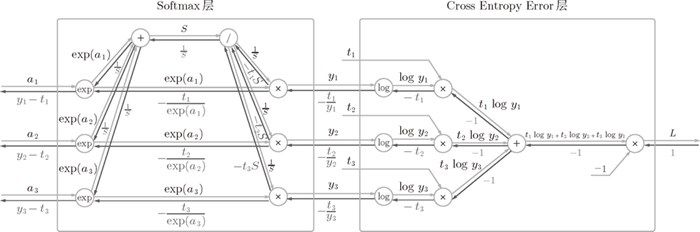

上面，我们画出了 Softmax-with-Loss 层的计算图的全部内容，并求了它的反向传播。未做省略的 Softmax-with-Loss 层的计算图如图 A-5 所示。

图 A-5 Softmax-with-Loss 层的计算图
图 A-5 的计算图看上去很复杂，但是使用计算图逐个确认的话，求导（反向传播的步骤）也并没有那么复杂。除了这里介绍的 Softmax-with-Loss 层，遇到其他看上去很难的层（如 Batch Normalization 层）时，请一定按照这里的步骤思考一下。相信会比只看数学式更容易理解。